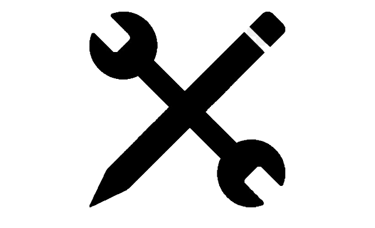

I am a results-driven and customer-focused individual with a proven track record of meeting and exceeding objectives and targets. I possess excellent communication skills and the ability to adapt to different audiences and situations. I am organized and efficient, with a strong focus on time management and meeting deadlines. In addition, I am personable and positive, with the ability to find solutions to problems and learn new skills quickly.
Skills

Customer Service Management - overseeing the team and ensuring high-quality customer support through goal-setting and process improvement. Organization Skills - planning and executing tasks effectively and efficiently, often involving the creation of schedules and lists and the organization of spaces. Team Motivation - inspiring and motivating the team to perform their best through goal-setting, recognition, and addressing challenges. Service Delivery - ensuring timely and satisfactory delivery of products or services, often involving coordination with other departments. Time Management - prioritizing tasks and managing time effectively to meet deadlines and accomplish goals, often involving the use of schedules and tools. Interpersonal Skills - communicating and working well with others- using tools such as active listening, empathy, and the ability to resolve conflicts.